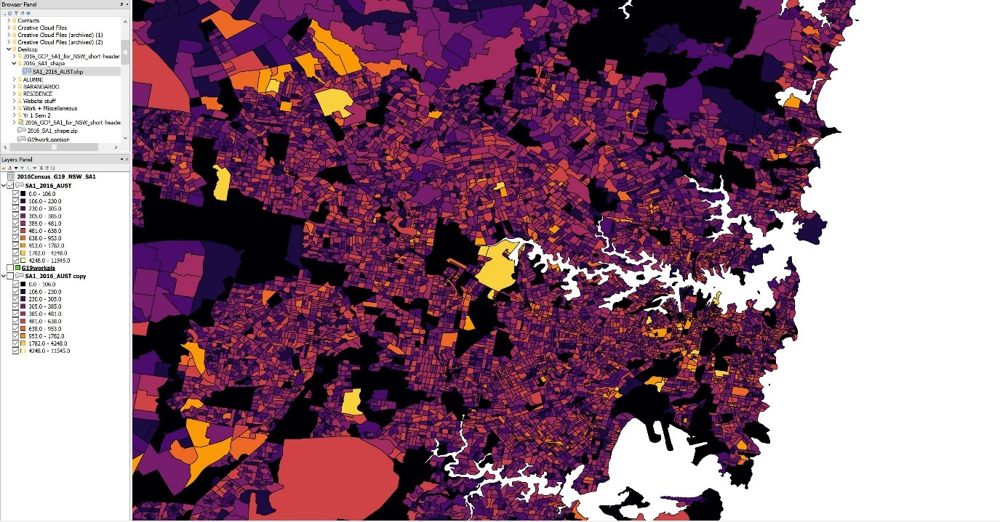
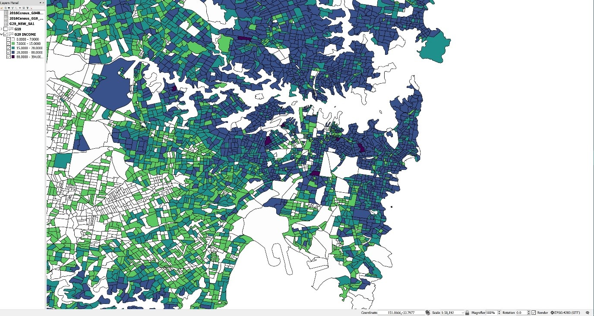
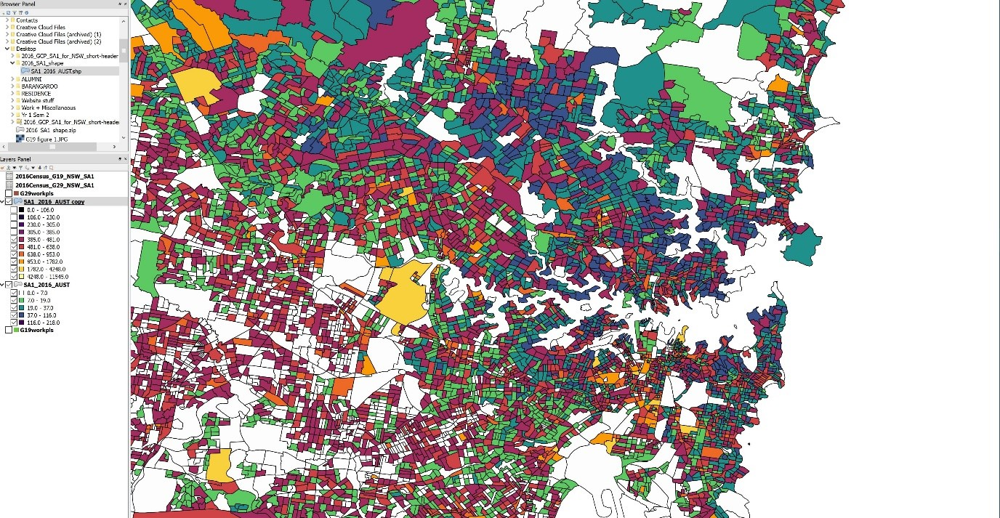
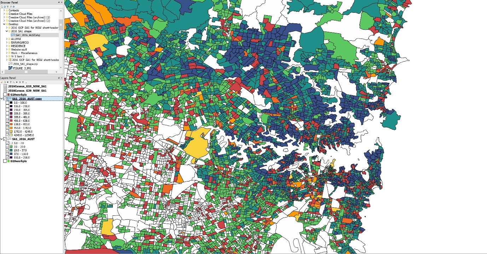
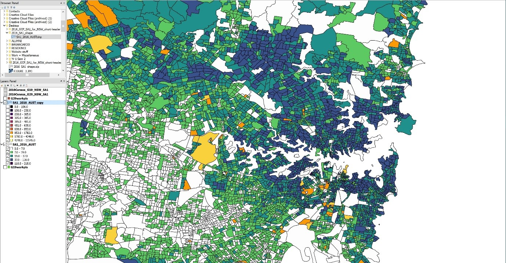
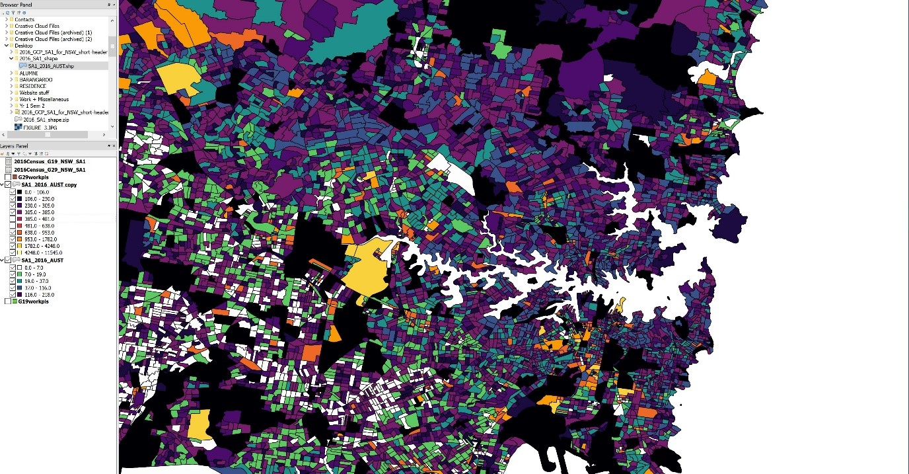

The disparity between the rich and the poor is blatantly obvious. In terms of spirit though, it is often blurred and false claims are often made by the wealthy. The original dataset G19 details information collected from the Australian 2016 census detailing the Voluntary work for an organisation by age and, by sex. It is being juxtaposed to the trends defined via the dataset G29; the weekly household income. We hypothesise that in overlaying these two datasets on top of one another in QGIS we will develop and construct a new trend which demonstrates how people with higher income are materialistic and are less likely to contribute to voluntary work. Whereas, people with lower income are far more generous and more willing to participate in voluntary work.
The data from G19 isn’t collected to determine which suburb is the most generous of them all. No, it is an important statistic for the continued growth of New South Wales. Volunteer work contributes to the NSW economy, valued at approximately 25.4 billion AUD to the Australian economy as of 2010. It determines social standards that communities inherent through service and other aspects of volunteering such as the satisfaction of individuals with their current state of life.
Both the Australian Government Department of Employment and the ACNC or Australian Charities and Not-for-profits Commission would incorporate this data into both legislation such as the Fair Work Act (FWA) and into the construction of Australian Charities reports. This data may also help the Government target areas through advertisements which have a high count of voluntary workers or in areas where more people are needed for volunteering.
To begin with, the first overlay shown in Figure 1 illustrates the information mapped from the dataset G19. The number of people who volunteered per precinct is demonstrated via the key on the left. The darker the colour, the less people applied for volunteer work, the lighter the colour, the more people volunteered. Before we can begin extrapolating evidence from the data; it must be noted that institutions such as Schools and Hospitals must be disregarded as they actively participate in many forms of voluntary work. From this, we can begin to see how both the Northern and Southern sides of the latte line actively participate in voluntary work. This was very interesting as it goes against the hypothesis and reveals how despite the South being disadvantaged they are still contributing as much time to events and community service as North of the latte line are.
Figure 1
Now, explaining Figure 1’s trends. Each layer represents the number of people who volunteered in each precinct. A majority of both Sydney’s outer and inner suburbs are shades from black to purple/red, meaning they’re within the brackets (0.0-106.0 ; 106.0-230.0 ; 230.0-305.0 ; 305.0-385.0 ; 385.0-481.0 ; 481.0-638.0). Thus, meaning that whilst both the North Shore and Sydney’s CBD residents do participate in forms of voluntary work, they are within the lower brackets hence only a minority participate in charity work. Surprisingly, this statistic was not expected; considering that the CBD is the centre of the city’s business activities, most of the actions occurring here will be purely for economical gain, we were expecting smaller amounts of people to contribute in any voluntary work. We were also expecting less residents within the CBD itself.
Other points of interest displaying similar patterns of data is Sydney Airport. The data states that the area has 0.0-106.0 people volunteering. Due to the airport being a high-security precinct as a result of certain international events; this was expected. However, it was concluded that some of the surrounding residential sites were included in the collated data of Sydney Airport or some civilians were on unpaid internships or work experience. However, some spots were recorded as having as many as 1782.0-4248.0 volunteers. Unfortunately, a majority of these areas are educational institutions that provide or force many opportunities upon the students. Areas such as the University of Sydney, University of New South Wales and Western Sydney University, Parramatta.
When comparing both sides of the latte line, the broader North Shore and the outer Western suburbs are very similar in regard to its patterns. Thus, similar ranges of voluntary work occur in these two areas. However, when comparing this to the Eastern suburbs, its noted that a very small minority of people participate in any form of voluntary work, the highest number of recorded volunteers being from UNSW. Therefore, it may be more viable to envisage a disparity between the number of people contributing to volunteer work when comparing the Eastern to the Western Suburbs.
To further identify and locate this disparity the data set G29 was overlayed on the map of NSW as seen in Figure 2. The column being utilised to generate the data seen in Figure 2 is the number of people earning a weekly household income of 4000AUD or more. Whilst this may be considered quite high, when comparing the data projected from this column to other totals between 2000-3500 the patterns were quite bland, making it difficult to draw valid data. This set of statistics is required to graph the demographics and disparity over NSW, mapping out areas of low and high socio-economic statuses. This data aids in the construction of statistics such as the percentage of households in debt (74%), up 2% since 2014 and the average disposable income of Australian households per week ($1009AUD).
Figure 2
It is a general assumption that the wealthy live in the North Shore and the disadvantaged situate themselves in the West. Before comparing anything it’s very clear that a majority of the Western suburbs do not earn over a total of 4000 AUD a week. Again, an outlier in the data could be because at least one or all members of the family aged 15 and over did not state what their income was. If this occurred the household was set to “All incomes not stated” or “Partial income stated” respectively. In the North Shore, a few white areas can be noted. These areas include Taronga Zoo, Middle Head, Chowder Head, beaches, National Parks and educational institutions. Disregarding these, a majority of the North Shore and Eastern Suburbs earns over 4000 AUD a week.
Contrasting these two areas to the western suburbs an obvious picture is painted as far less people in the West earn 4000AUD or more. Noted via the traditional demographic labelling of these areas of Sydney and justified from Figure 2. The median house price is well above a million dollars and to be able to afford a comfortable lifestyle in the North or Eastern suburbs you are required to have a large yearly income. Hence, the results generated from G29 were not surprising.
A very interesting image is constructed when we overlay the voluntary work over the income dataset. When turning the first four layers of the volunteers layer off as seen in Figure 3, data begins to correlate with each other. The obvious few being areas such as Taronga Zoo, Cockatoo Island, Royal Randwick Race course and Sydney Cricket Grounds.
Figure 3
The fifth layer of G19 was turned off shown in Figure 4, that being only the 385.0-481.0 volunteers in those precincts. What was interesting was patterns began to emerge and favour the initial hypothesis. In areas where little volunteer work was present in the North Shore, the last two brackets of the G29 dataset perforated through, denoting how the wealthy do not participate in volunteer work as often as they could. Furthermore, as seen in Figure 4, more red/orange slabs appear in the Western suburbs denoting much more non-profit work occurring in those areas.
Figure 4
Figure 5 shows the 6th and 7th layers (481.0-638.0 and 638.0-953.0) turned off for the analysis of the Western suburbs as these were the most dominant in the region. Immediately trends supporting the hypothesis arise. A majority of the people in the West we can see do not earn over 4000AUD a week, only a minority do. Hence providing evidence to support the notions of those with less income being more inclined to aid their fellow man, unlike those who do have a large income.
Figure 5
Additionally, when the 4th and 5th layers are turned off and the rest left on for G19, we can begin to see the correlation between lower income and higher levels of participation in voluntary work. The Western suburbs shows high activity of voluntary work through layers 4 and 5 (385.0-481.0 and 481.0-638.0 people) and as viewed through Figure 6.
Figure 6
Henceforth, the data extrapolated from both census datasets G19 and G29 delineates evidence that supports and goes against the original hypothesis. The disadvantaged do volunteer more often than those with a higher socio-economic status however those in the wealthier bracket do also contribute a lot of time to volunteering. The reasoning behind these statistics is difficult to demonstrate only using dataset G19 and G29. However, it can be assumed that the aspects of volunteering such as the satisfaction of assisting individuals is more valued than the material facets of life within the Western communities. It can also be concluded that those below the latte line are more generous than a majority of those above it. Thus, with the continued growth of the Western suburbs and the plateaued growth on the Northern aspect of the latte line it can be concluded that the higher the weekly income, the more likely an individual is to partake in voluntary work.